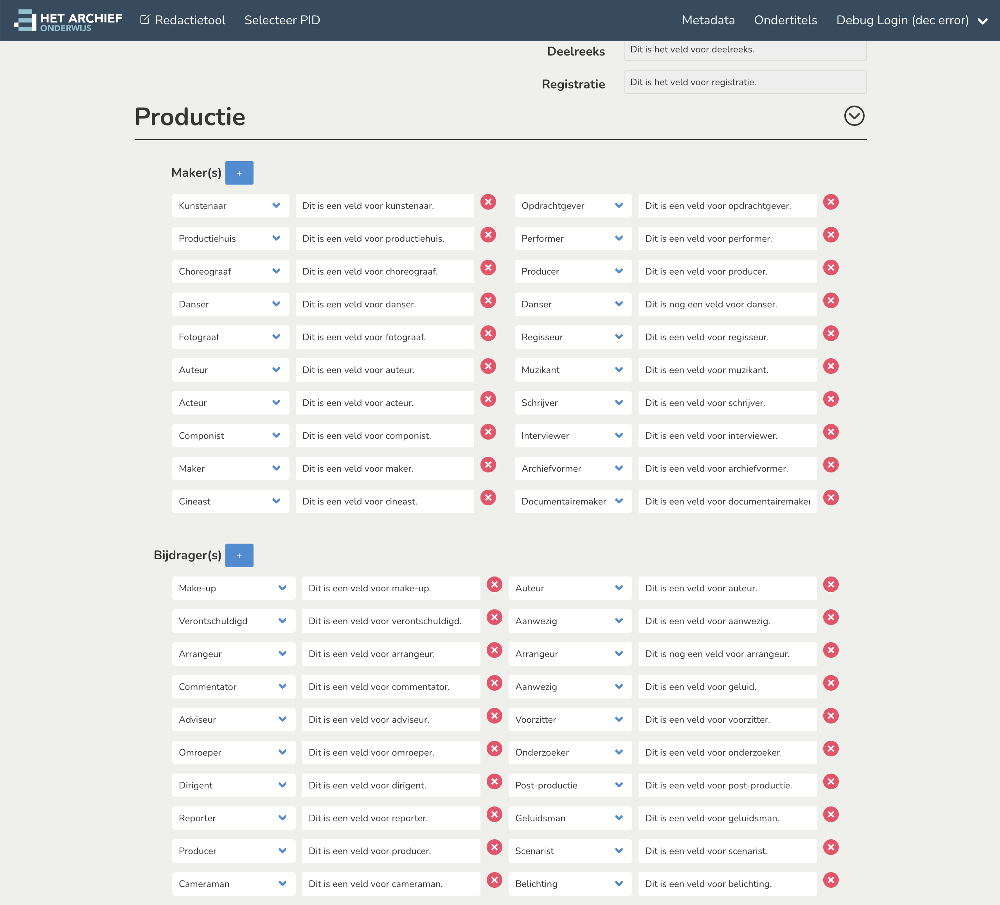
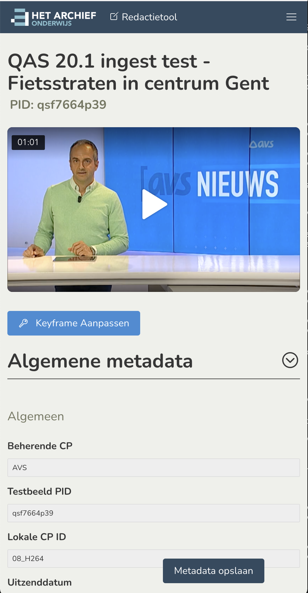
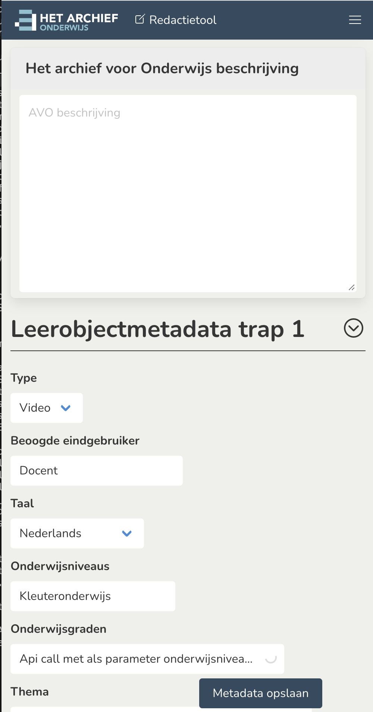

Wireframe
Implemented
Screen for SAML login due Friday 10/12/2021
DEV-1851
Remarks the entire form will have to be replaced with a public screen once we move to SAML only authentication.


Temporary placeholder image used + added suggestion to move login button
out of header into the central dialog instead.


Remarks: Metadata opslaan is 'sticky' per request in ticket (not visible on wireframes).




Remarks: adding+removing already works. But needs some tweaks + a bugfix (for when you delete all items + we need to add some unique ids with some js code). All mapping done 13/12/2021 and this closes ticket DEV-1811


Proof of concept customized richtext editor
Proof of concept: thema selection as depicted in wireframes (shows some concerns and practical issues with this approach)
Alternative bulma styled thema selector suggestion (work in progress)

Wireframe(s) missing?

Not a hard 'business requirement', but everything is already responsive too ;)

